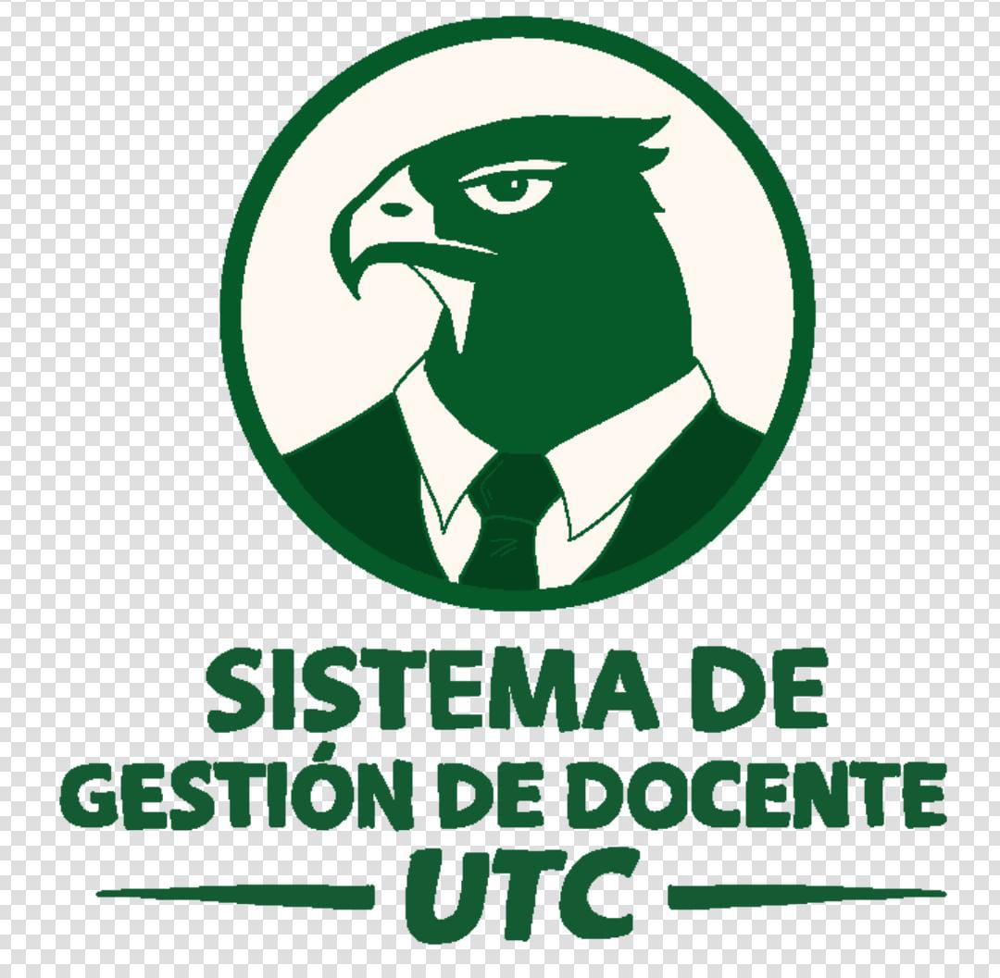

Alfaro Alanís Ramiro Alejandro
Analista de Pruebas (QA)

¡Bienvenidos al portal oficial del Sistema de Gestión Docente (Plantilla Docente) de la UTC! Esta plataforma se encuentra actualmente desplegada y en operación, facilitando la administración de asignaturas, control de horarios, perfiles académicos y generación de reportes institucionales. Nuestro sistema digitaliza por completo el flujo de autorización y consulta, mejorando la eficiencia y brindando información en tiempo real con una interfaz limpia y orientada a la productividad.
Implementación Completada
Servidores Dedicados Activos
Docentes Registrados
Tiempo de Respuesta API
Explora capturas reales de módulos trabajando en la plataforma institucional.
.jpeg)


El ecosistema fue construido enfocándose en rendimiento, legibilidad y seguridad mediante las siguientes áreas del conocimiento:
Marcado semántico de alta calidad que asegura la claridad del código y jerarquía del contenido.
Estilos modulares empleando variables nativas para lograr un diseño oscuro, limpio y focalizado.
Consumo optimizado de recursos y renderización interactiva ágil en el navegador.
Trámites fluidos de paquetes de datos entre los controladores del servidor y la vista.
Estructura lógica, patrones de diseño robustos y orientación a objetos para el negocio.
Consulta estructurada, normalización de datos maestros y respaldo institucional centralizado.
Profesionales concentrados en el éxito, despliegue y soporte continuo de la aplicación.